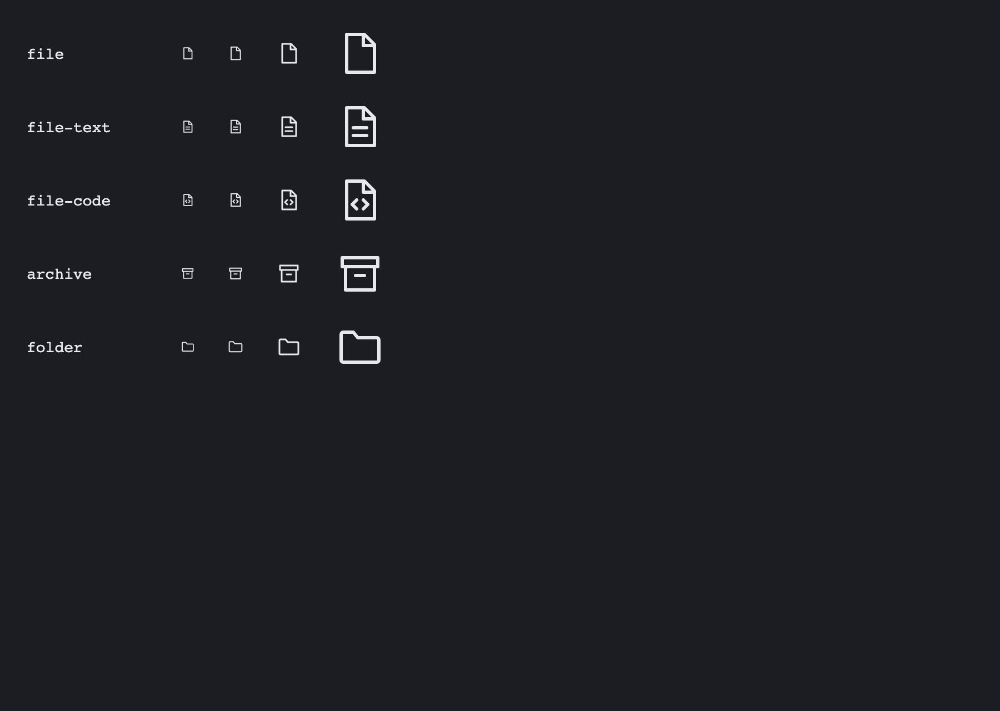
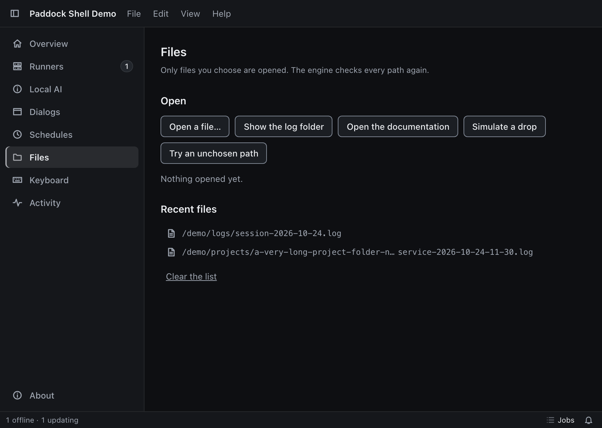
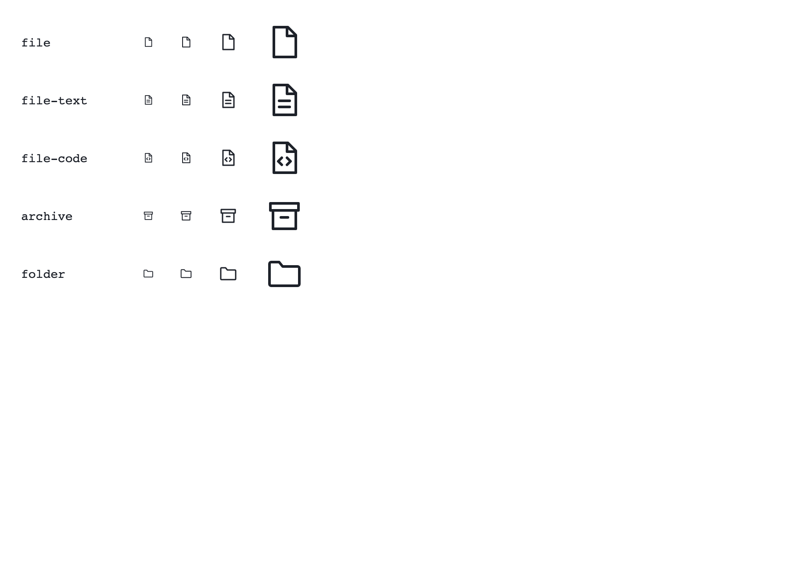
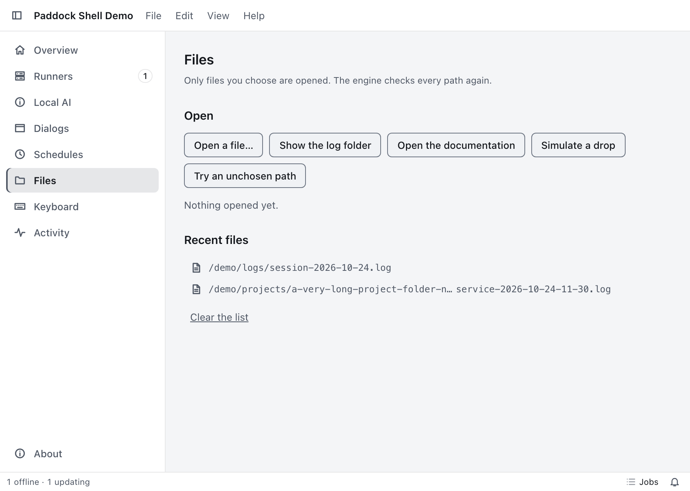

The new file-type glyphs of the pd: set at 14, 16, 24 and 48 px (folder for comparison)

Files page: recent entries drawn with file-type glyphs (16 px), the full path as the tooltip

Settings > Storage: what the app keeps, per folder, with Folders, Show and ClearSettings > Storage: the size tree of the cache as a table grouped by folder
light
The new file-type glyphs of the pd: set at 14, 16, 24 and 48 px (folder for comparison)

Files page: recent entries drawn with file-type glyphs (16 px), the full path as the tooltip

Settings > Storage: what the app keeps, per folder, with Folders, Show and ClearSettings > Storage: the size tree of the cache as a table grouped by folder